Design
ConceptPi Kapp
App
A mobile concept for helping fraternity members keep track of milestones and stay connected to the organization.
Every year looked a little different. The same stuff still had to get done.
Students already had a lot to keep up with: college, financial responsibilities, fraternity milestones, and the systems around them. As Pi Kapp's lead designer and Assistant Executive Director of Communications, I explored whether one mobile experience could make the member side easier to follow.

I reviewed the resources we already had, including recruitment guides, and spoke with new graduate recruiters, students, executive board members, and chapter administrators. I also drew on my own experience inside the organization.
The same issues kept coming up: information was spread across tools, and the member experience became harder to follow whenever another system entered the mix.
Research context: this was practical internal discovery for an experimental concept, not a funded usability study.
Starting out · Associate member
Associate member
Find the first milestones and understand what comes next.
What do I need to do?Helping run it · Chapter secretary
Chapter secretary
Keep up with personal progress while helping the chapter stay organized.
What needs attention?Finishing the year · Graduating senior
Graduating senior
See what is finished, what is left, and how to stay connected.
What is still left?
There was already a system. It was just spread everywhere.
Chapter work moved through spreadsheets, Drive folders, PDFs, documents, financial tools, and the existing gateway. I was not trying to replace all of it. I wanted the member-facing part to feel more like one place.
I sketched the main surfaces first, then mapped the content into four destinations: Member, Chapter, National HQ, and Settings.
The member view held personal progress and chapter updates. The other tabs kept chapter standing, national information, and account details nearby without making the dashboard do everything.
About the integrations: I planned around tools Pi Kapp already used, including iMIS and OmegaFi. I did not build or test those connections.

V1 established the structure. V2 clarified the loop.
The later V2 explored how attention, responsibility detail, and completion could work before the final remaster.
Earlier concept sequence
V1 concept screens.
The sequence shows how the original identity, member dashboard, and milestone detail were explored before the current remaster.
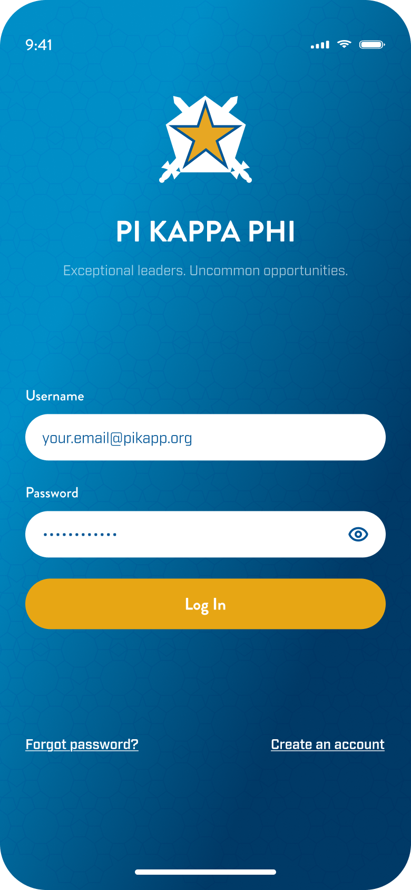
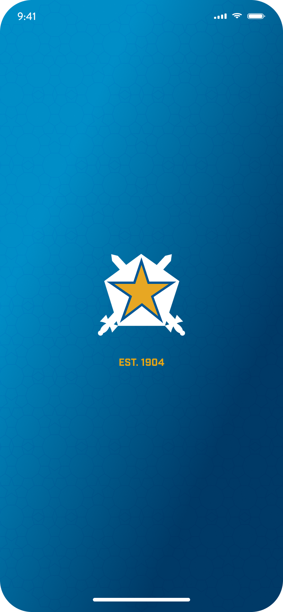
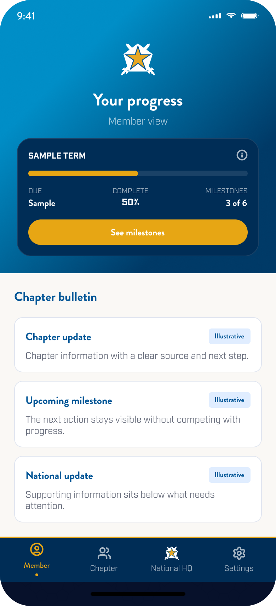
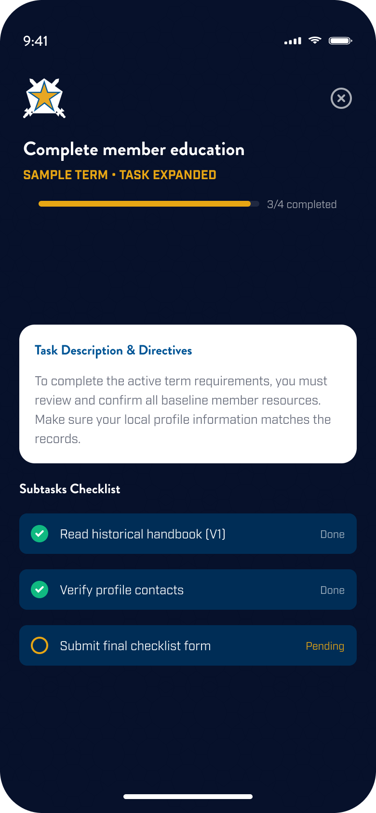
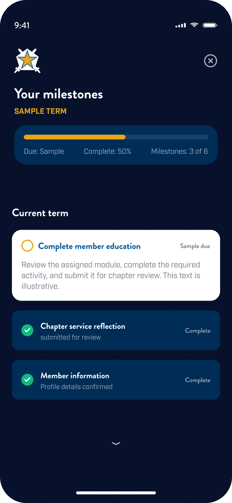
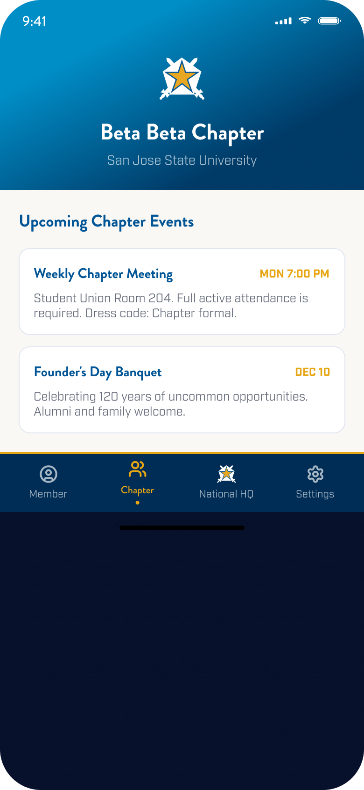
Earlier static V2 states
The prototype clarified the attention-to-completion loop.
Three states preserve the earlier direction: orientation, responsibility detail, and a clear ending state.
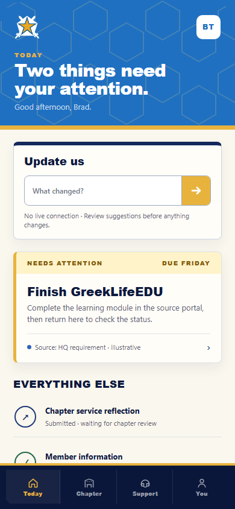
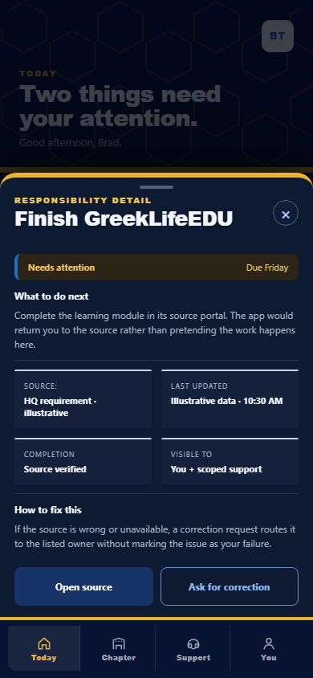
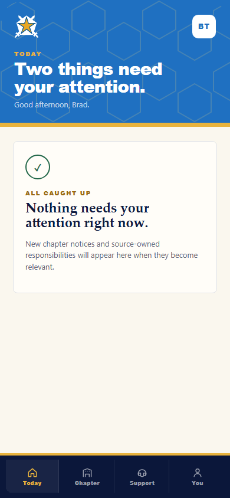
Illustrative concept screens.
Chapter 04
The final remaster brings the app back to its source.
The final direction returns to the original cyan field, Star Shield, hex texture, and member flow, then rebuilds the interface for current screens. It keeps the authored identity recognizable while tightening type, spacing, controls, contrast, and accessibility.
The final remaster draws from the original app files and archived Pi Kappa Phi identity. This chapter shows the pieces used across the final concept sequence.
Pi Kapp App
Source vocabulary
 Original vector app mark
Original vector app mark
Color
Brand foundation and interface layers
Brand blue
Identity and recognition
Brand gold
Actions and progress
App cyan
Entry and member view
App navy
Structure and detail
White
Fields and reading
Type
Brand, interface, and status roles
Web-safe brand voice
Interface hierarchy
Short labels keep the next action clear. Supporting text explains only what the member needs in that moment.
Components
Only the pieces used by the final remaster
Form controls
Member progress card
- Due
- Sample
- Complete
- 50%
- Milestones
- 3 of 6
Bulletin row
Illustrative information appears here with a clear source and next step.
Milestone states
Bottom navigation
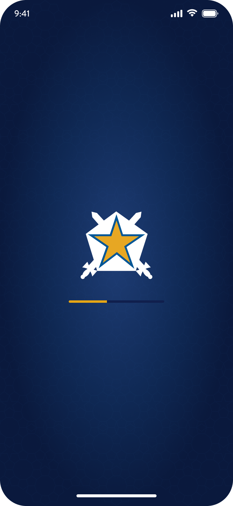
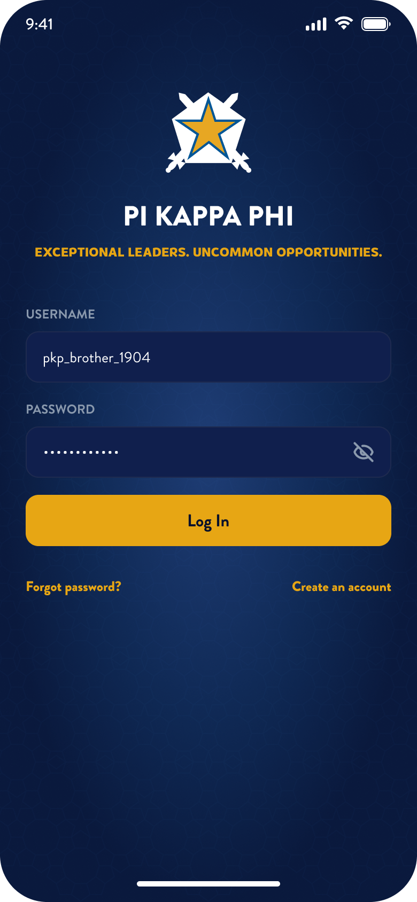
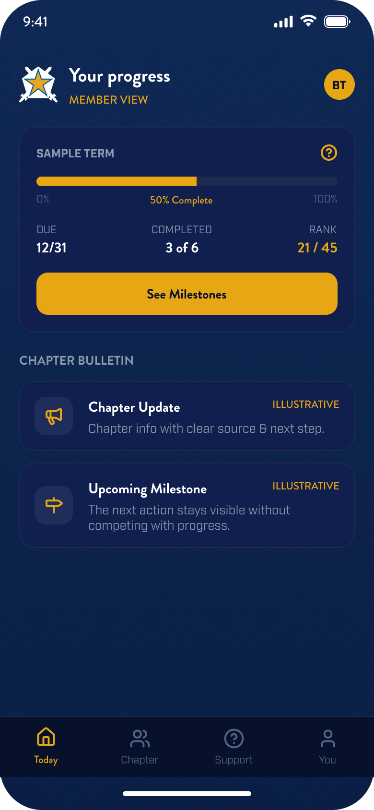
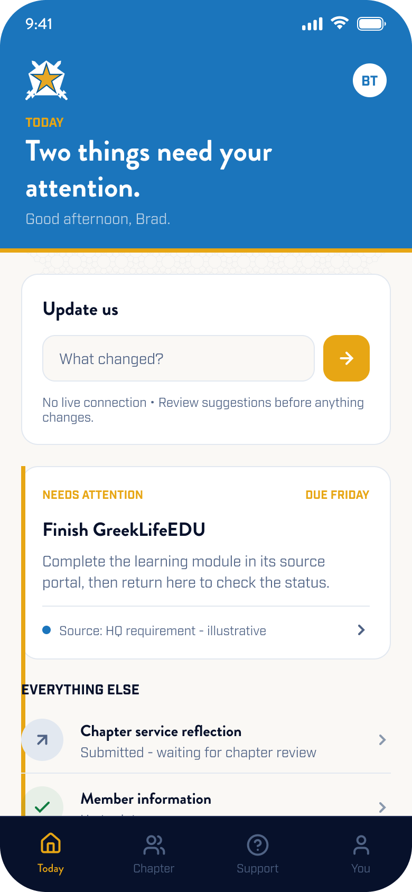
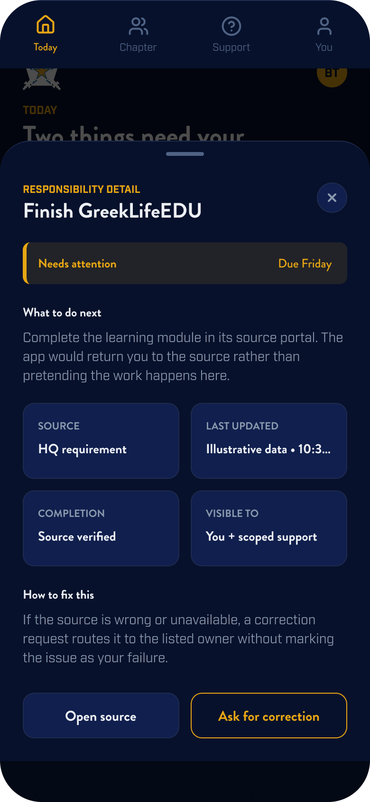
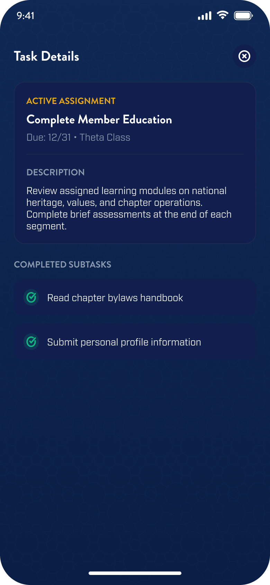
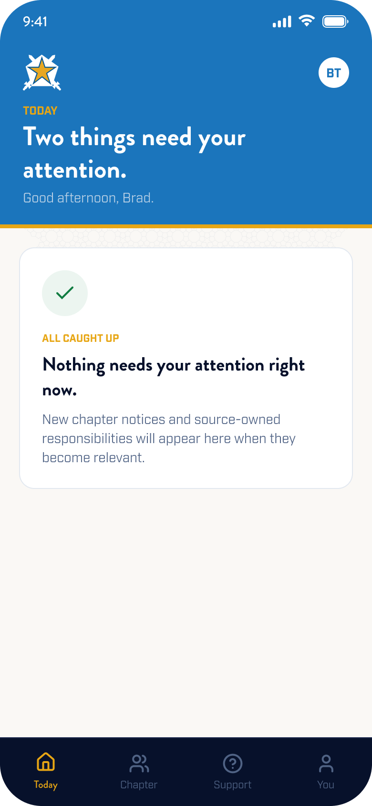
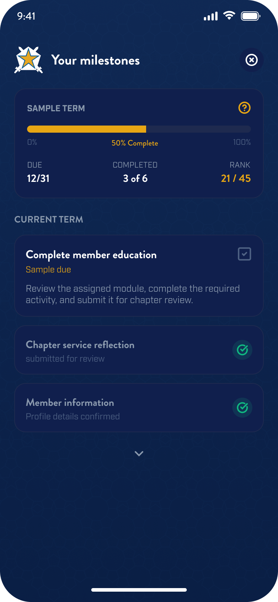
Illustrative concept screens. Names, dates, rankings, and activity are fictional.
A formative project that changed how I approached product design.
This project connected my experience in leadership and communications with a growing interest in product design and research. It was an early attempt to make HQ feel closer to day-to-day chapter life through one member-facing app.
The concept still needed usability testing and a clearer integration model. What stayed with me was the approach: start with the systems people already use, then make the member-facing experience easier to understand.